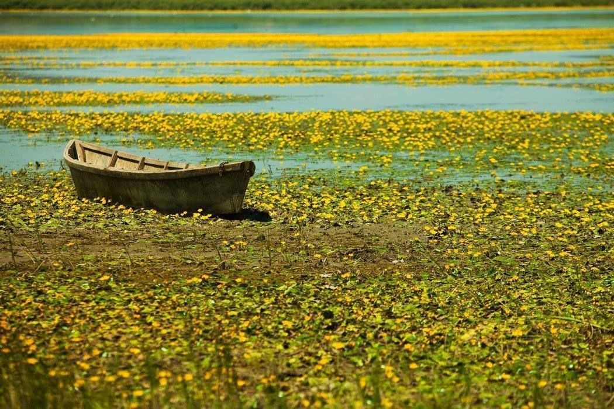
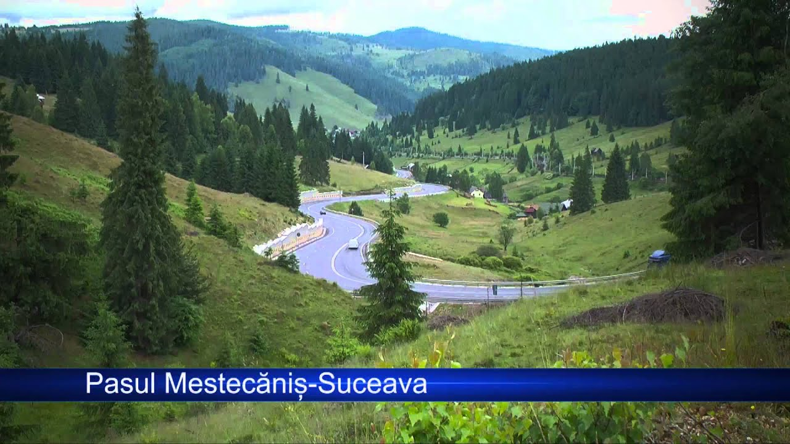
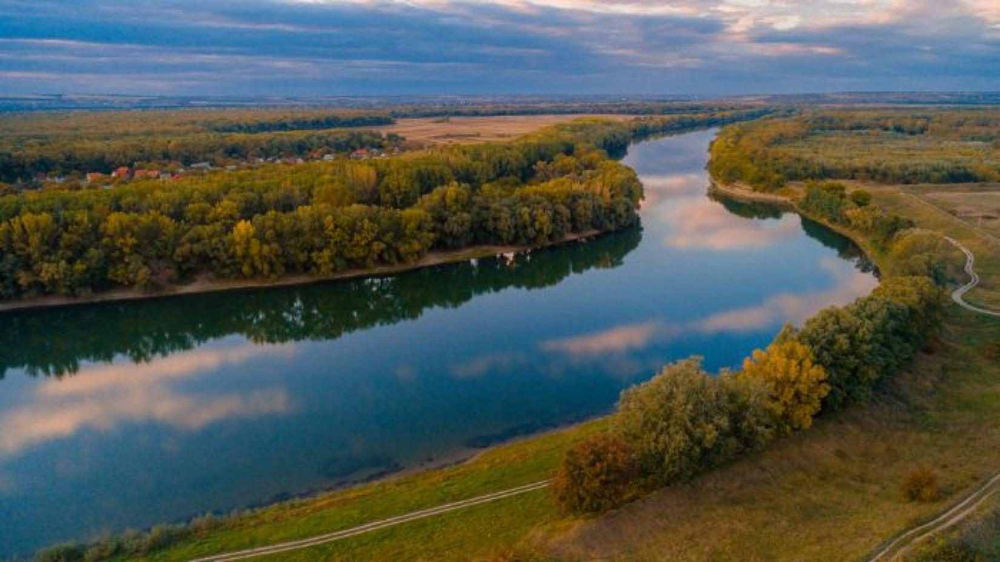

Geografia Moldovei
Republica Moldova se află în sud-estul Europei, fiind o țară cunoscută pentru diversitatea peisajelor sale naturale. De la câmpiile fertile ale Bălților până la zonele montane din sudul țării, Moldova este o destinație geografică deosebită.
Republica Moldova este o țară situată în sud-estul Europei, fiind înconjurată de România la vest și Ucraina la nord, est și sud. Deși este o țară mică, Moldova este extrem de diversificată din punct de vedere geografic, având o varietate de peisaje și condiții naturale care o fac un loc unic în Europa. În acest referat, voi explora caracteristicile geologice, climatice și hidrografice ale Moldovei, precum și cele mai importante forme de relief ale țării.
1. Poziția geografică și granițele
Republica Moldova se află într-o zonă de tranziție între Europa de Est și Balcani, iar poziția sa geografică joacă un rol important în istoria și cultura țării. Moldova se întinde pe o suprafață de aproximativ 33.846 km², ceea ce o face o țară relativ mică, comparabilă cu dimensiunile unor regiuni sau state din Europa.Țara este delimitată de:
La vest: România, cu o lungime a graniței de aproximativ 680 km.
La est: Ucraina, cu o graniță de 1.282 km. De asemenea, Moldova include regiunea separatistă Transnistria, care nu este recunoscută internațional, și care se află pe malul estic al râului Nistru.
2. Relieful
Relieful Moldovei este predominant deluros și este caracterizat de o mare diversitate. Principalele unități de relief din Moldova sunt: Câmpia Moldovei: Situată în partea centrală a țării, câmpia se află între râurile Prut și Nistru. Este o zonă de lunci și câmpii fertile, care constituie una dintre cele mai importante zone agricole ale țării. Aici se cultivă, în mod special, cereale, legume și viță de vie. Dealurile și colinele: Moldova este cunoscută pentru dealurile sale din centrul și sudul țării, unde există formațiuni montane mai mici, ce se înalță treptat din câmpiile din jur. Dealurile subcarpatice și colinele de la sud și est sunt bogate în resurse naturale, iar în aceste zone se află și câteva orașe importante. Carpații Moldoveni: Deși Moldova nu are munți în sensul tradițional al termenului, regiunile de nord și est ale țării sunt influențate de prelungirile Carpaților. Acestea sunt zone montane mai joase, dar încăpită de o vegetație bogată și o faună diversificată.3. Clima
Clima Moldovei este temperată-continentală, cu veri calde și ierni reci, dar nu extreme. Temperaturile medii anuale variază între 9°C și 12°C, în funcție de regiune. Iarna, temperatura medie este de -3°C în zonele mai reci și de 2°C în sud. Vara, temperatura medie este de 22°C în sud și 18°C în nord. Plouă moderat pe tot parcursul anului, cu o cantitate de precipitații de aproximativ 400-600 mm pe an. Cele mai multe ploi cad în perioada primăverii și toamnei, iar în lunile de vară pot apărea secete.4. Hidrografia
Moldova este traversată de numeroase râuri și afluenți, printre cele mai importante fiind: Râul Nistru: Cel mai mare râul din Moldova, care formează o mare parte din granița estică a țării cu Ucraina. Este important pentru irigații, transport și energie hidro. Râul Prut: Se află la vest, formând granița naturală între Moldova și România. Alte râuri semnificative sunt Bâc, Cogâlnic, și Răut. De asemenea, în sudul Moldovei se află lacuri naturale și de acumulare, cele mai importante fiind lacurile de pe râul Nistru și lacurile mici din Delta Prutului.5. Flora și fauna
Flora Moldovei este caracterizată de păduri, ierburi și vegetație tipică regiunilor temperate. În regiunile deluroase și montane ale țării se găsesc păduri de fag, stejar și arin. Zona de câmpie este predominant acoperită de ierburi și culturi agricole. Fauna Moldovei include o varietate de specii de animale, de la mamifere mari, cum ar fi cerbul și mistrețul, până la păsări și reptile. În regiunile montane trăiesc lupi și vulpi, iar pe râuri și lacuri se întâlnesc diverse specii de pești.6. Resurse naturale
Moldova este o țară relativ săracă în resurse naturale, dar are câteva resurse importante, cum ar fi solurile fertile, care o fac una dintre cele mai mari producătoare de produse agricole din Europa de Est. De asemenea, Moldova are resurse subterane de cărbune și gaze naturale, dar exploatarea acestora este limitată. Concluzie Geografia Moldovei este un amestec de câmpii fertile, dealuri și regiuni montane, care definesc caracterul natural al țării. Poziția geografică a Moldovei, clima temperată și resursele naturale o fac un loc deosebit în Europa de Est. Deși nu are munți înalți, țara se bucură de peisaje variate, ideale pentru dezvoltarea agriculturii și turismului natural. În ciuda dimensiunii sale relativ mici, Moldova joacă un rol important în istoria și cultura regiunii, iar geografia sa continuă să influențeze viața și economia locuitorilor săi.


